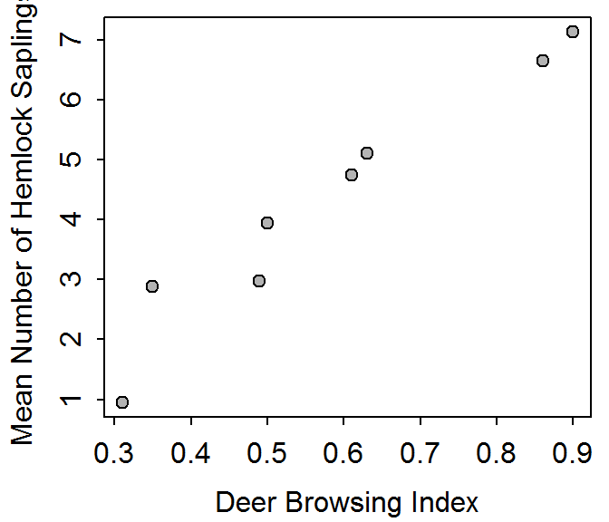

The scatterplot between mean number of hemlock samplings and the deer browsing index is shown in Figure 1. The correlation coefficients is 0.97.

Figure 1: Scatterplot of wolf territory size versus deer density.
df <- read.csv("data/Hemlock.csv")
plot(saplings~browse,data=df,pch=21,bg="gray70",
ylab="Mean Number of Hemlock Saplings",xlab="Deer Browsing Index")
corr(saplings~browse,data=df)